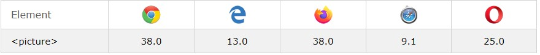
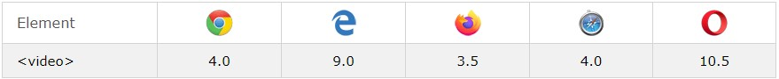

1.Etiqueta figure


Ventajas de la etiqueta figure
La principal ventaja de esta etiqueta,no es el resultado estetico que nos da, ya que no dista de una imagen con un parrafo en su parte inferior, la ventaja esta en la forma que es leida nuestra web por los robots, al utilizar la etiqueta estos relacionan directamente la imagen con el contenido del figcaption
Compatibilidad con los navegadores

2.Etiqueta iframe
Como podemos observar su uso es sencillo, en la actulizad esta en desuso, nos permite encapsular en un marco una web dentro de otra, los robots de google no lo valoran bien ya que reduce la legiblidad
Compatibilidad con los navegadores
3.Etiqueta Video
Esta etiqueta nos permite incrustar un video en nuestra web, podemos darle el tamaño que queramos, tenemos que tener en cuenta que si supera la resolucion original del video se vera pixelado
Compatibilidad con los navegadores

3.Etiqueta Audio
Esta etiqueta nos permite incrustar un audio en nuestra web, podemos darle el tamaño que queramos, tenemos que tener en cuenta que si supera la resolucion original del video se vera pixelado
Compatibilidad con los navegadores